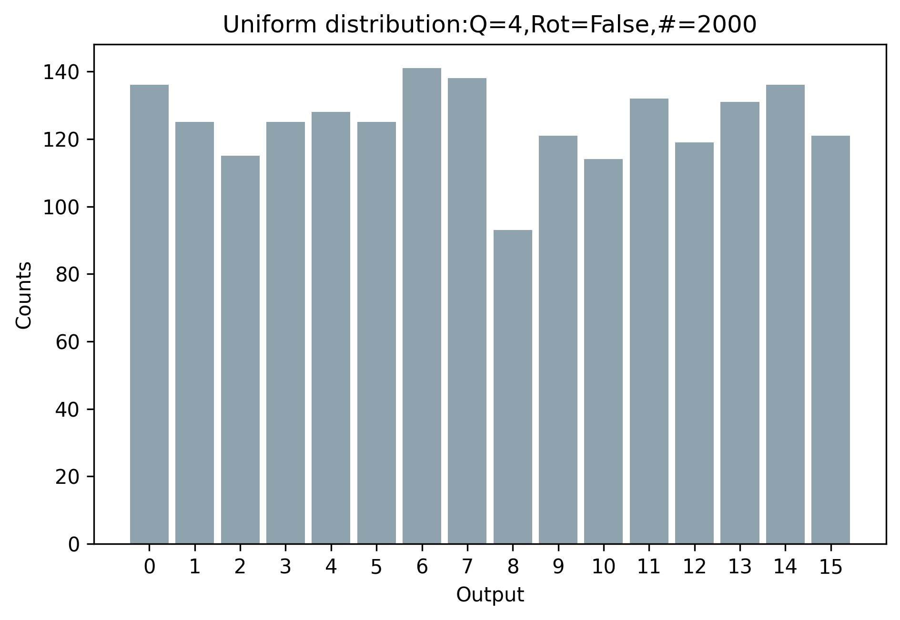
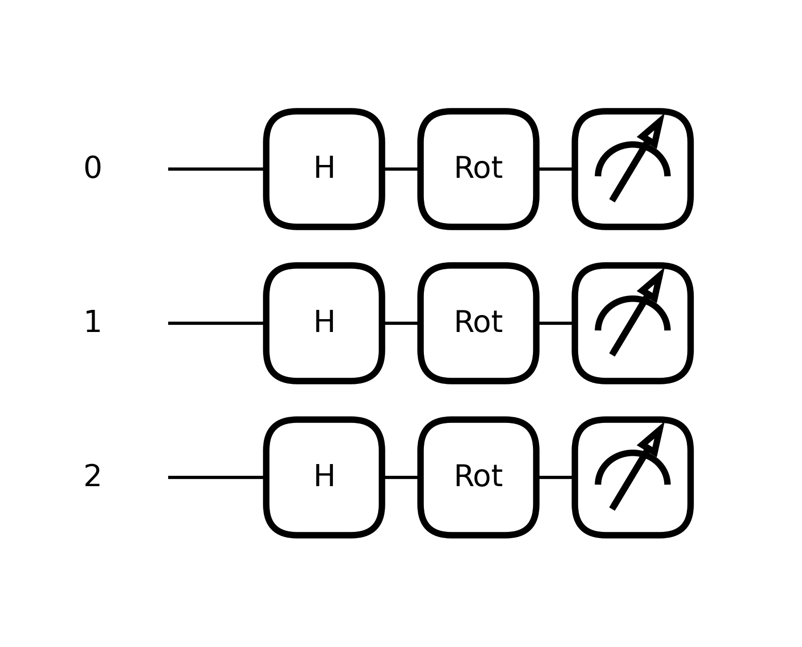
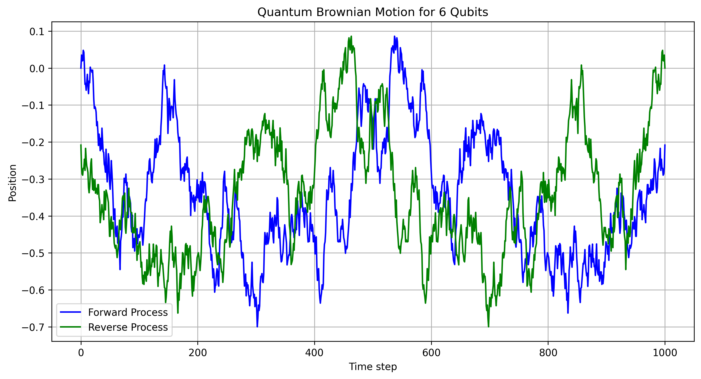

Initially, we employ \( N \) qubits in a non-parametric quantum circuit to produce a uniform
distribution over \( 2^N \) discrete outcomes:

The resultant uniform PDF output serves as the input (quantum rotations) for the next quantum circuit:

The mathematical representation of this 3-qubit system undergoing a Hadamard transformation
followed by rotations can be formulated as follows:
The Hadamard matrix \( H \) is given by:
\[
\begin{equation}
H = \frac{1}{\sqrt{2}} \left[ \begin{array}{cc} 1 & 1 \\ 1 & -1 \end{array} \right]
\end{equation}
\]
The 3-Qubit Hadamard operation \( H^{\otimes 3} \) is:
\[
\begin{equation}
H^{\otimes 3} = H \otimes H \otimes H
\end{equation}
\]
The general rotation operator \( R(\theta, \phi, \lambda) \) is:
\[
\begin{equation}
R(\theta, \phi, \lambda) = \left[ \begin{array}{cc} \cos\left(\frac{\theta}{2}\right) & -e^{i\lambda}\sin\left(\frac{\theta}{2}\right) \\ e^{i\phi}\sin\left(\frac{\theta}{2}\right) & e^{i(\phi+\lambda)}\cos\left(\frac{\theta}{2}\right) \end{array} \right]
\end{equation}
\]
The 3-Qubit rotation operation \( R^{\otimes 3} \) is:
\[
\begin{equation}
R^{\otimes 3} = R(\theta_1, \phi_1, \lambda_1) \otimes R(\theta_2, \phi_2, \lambda_2) \otimes R(\theta_3, \phi_3, \lambda_3)
\end{equation}
\]
The complete 3-Qubit operation \( |\psi'\rangle \) is:
\[
\begin{equation}
|\psi'\rangle = (R^{\otimes 3} \otimes H^{\otimes 3}) |\psi\rangle
\end{equation}
\]
Here we provide the respective code snippet:
def Q_PQC_UNIFORM_DIST_ANZATS(weights, useRot=True):
for i in range(n_qubits):
qml.Hadamard(wires=i)
if useRot:
qml.Rot(weights[0], weights[1], weights[2], wires=0)
qml.Rot(weights[3], weights[4], weights[5], wires=1)
qml.Rot(weights[6], weights[7], weights[8], wires=2)
_expectations = [qml.sample(qml.PauliZ(i))
for i in range(n_qubits)]
return _expectations
Our focus is on sampling techniques.
The key difference between the expressions
\texttt{[qml.sample(qml.PauliZ(i)) for i in range(n\_qubits)]} and
\texttt{[qml.expval(qml.PauliZ(i)) for i in range(n\_qubits)]} lies
in the type of result they produce.
The former yields a sampled measurement outcome, whereas the latter returns
the expectation value. Specifically, \texttt{qml.sample()}
performs a measurement on the qubit in the Pauli-Z basis, leading to the
collapse of the wavefunction and randomly returning either 0 or 1,
based on the inherent probabilities of the qubit state. Conversely,
\texttt{qml.expval()} calculates the expectation value \( \langle Z \rangle \) of the
Pauli-Z operator on the qubit, providing the average value
one would expect to measure, without causing the wavefunction to collapse.
In summary, \texttt{qml.sample()} gives a random measurement sample (0 or 1),
while \texttt{qml.expval()} delivers the expected average value of a measurement
(a value between 0 and 1). Sampling leads to the collapse of the quantum state,
whereas expectation values allow for continued quantum operations.
See:
QonFusion source code.
Presented herein is a depiction of the application of our Quantum Gaussian generator in simulating Brownian motion.
This serves as a quality assessment of our Quantum Random Number Generator (QRNG).
In typical Brownian motion, if the mean of the Gaussian distribution deviates from zero,
the resultant motion ceases to resemble true Brownian behavior. In contrast,
our QRNG successfully captures the essence of Brownian motion.
